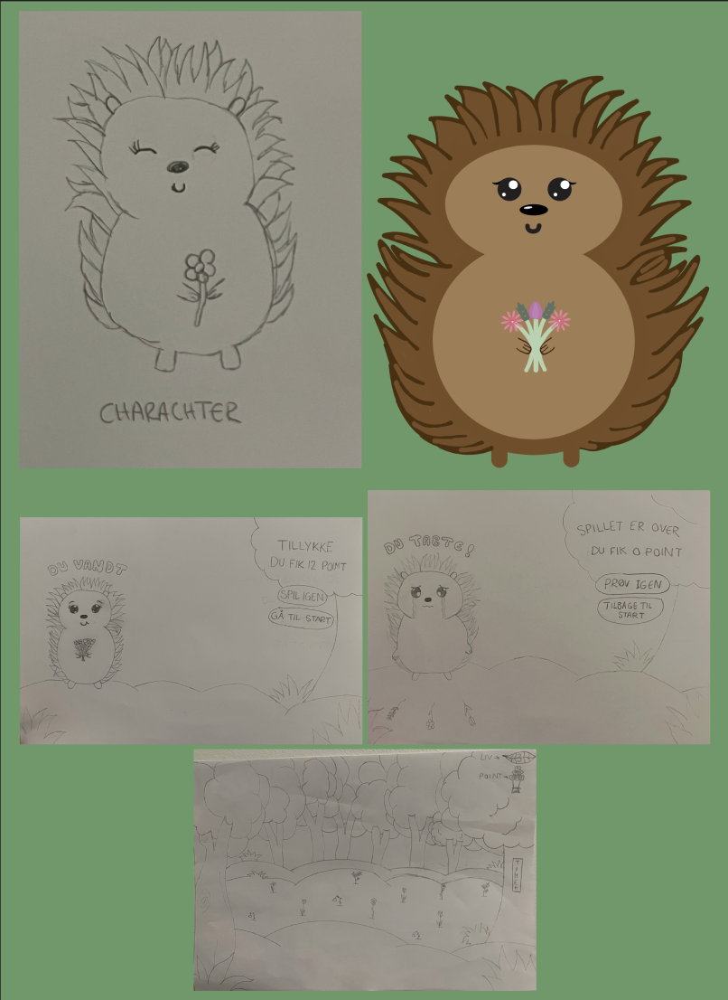
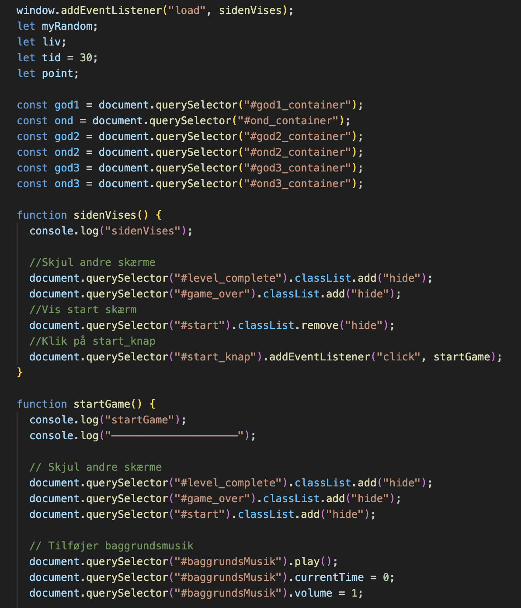
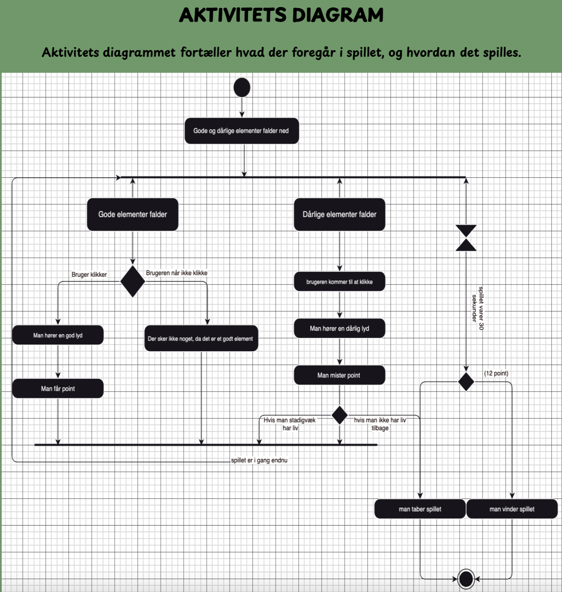
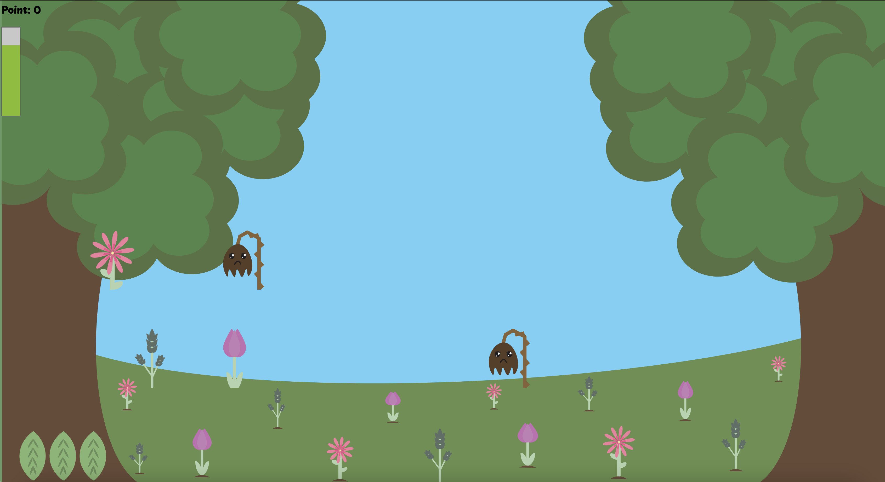

I forløbet om grundlæggende animation fik vi opgaven at udvikle vores eget spil. Vi blev
introduceret til kodedelen ved
hjælp af Javascript og designprocessen ved brug af Adobe Illustrator. For at skabe spillet
skulle vi først have en klar
koncept og idé. Jeg valgte at udvikle et spil med en sød pindsvin, der samler blomster til en
buket.
Alle spilelementerne blev tegnet i Adobe Illustrator og konverteret til SVG-filformatet, hvilket
muliggjorde
animationen, når de skulle kodes. Efterfølgende arbejdede jeg med Aktivitetsdiagram og State
Machine Diagram for at
planlægge spillets struktur og gøre det mere struktureret.
Jeg har skrevet mere detaljeret om mine arbejdsprocesser og resultater inden for dette tema
nedenfor.
GRUNDLÆGGENDE
ANIMATION
04.04.01 Temaopgave
Inden jeg startede på spillet, fik jeg tid til at skitsere vores karaktere, elementer og
spilbaggrunde. Jeg skitserede på noget papir, hvor jeg fik tegnet alle mine elementer, som jeg senere
hen fik rentegnet inde på Adobe Illustrator. Jeg valgte at tage udgangspunkt i at mit spil skulle have
et nuttet tema, og valgte derfor at gå efter kawaii-stilen. Man kan eksempelvis se, at jeg har fået
inpsiration fra kawaii-stilen, på min hovedkarakter, da den har nuttede øjne, rund krop og ikke-skarpe
former.
Da alle mine rentegninger på Illustrator var tegnet færdigt, konverterede jeg dem til SVG-filer, og
begyndte at kode.

Spillet er simpelt, og det handler om at klikke på "gode" og "dårlige" elementer for at optjene point
eller miste liv.
Efter nogle sekunder vinder eller taber man spillet.
I første del af udviklingen arbejdes der på konceptet og de grafiske elementer, herunder baggrund,
spilelementer og
UI-elementer.
I den næste del kodes en html-side til spillet, hvor spil-scenen opbygges med hjælp fra HTML og CSS. I den tredje fase læres det hvordan man styrer spilelementerne ved hjælp af JavaScript. Der udvikles funktioner til at optjene point, miste liv og vinde eller tabe spillet.
I den fjerde og sidste fase implementeres lydeffekter og der læres om styring af lyd ved hjælp af JavaScript. Baggrundsmusik og ekstra lyde har jeg også tilføjet, f.eks. når man klikker på de gode og dårlige elementer.
At arbejde med JavaScript kan være udfordrende i forhold til HTML og CSS, da det er en ny måde at kode på. Alt i alt resulterer det i et lille, underholdende spil, der har været tilfredsstillende at have udviklet.
I den næste del kodes en html-side til spillet, hvor spil-scenen opbygges med hjælp fra HTML og CSS. I den tredje fase læres det hvordan man styrer spilelementerne ved hjælp af JavaScript. Der udvikles funktioner til at optjene point, miste liv og vinde eller tabe spillet.
I den fjerde og sidste fase implementeres lydeffekter og der læres om styring af lyd ved hjælp af JavaScript. Baggrundsmusik og ekstra lyde har jeg også tilføjet, f.eks. når man klikker på de gode og dårlige elementer.
At arbejde med JavaScript kan være udfordrende i forhold til HTML og CSS, da det er en ny måde at kode på. Alt i alt resulterer det i et lille, underholdende spil, der har været tilfredsstillende at have udviklet.

Under spil-processen fik jeg lavet et aktivitetsdiagram, der fortæller hvordan spillet
spilles, og selve spillets handling. Aktivitetsdiagrammet, giver en forståelse over hvilken rolle
elementerne har, og viser en overordnet struktur omkring spillet, hvilket er nyttigt til når man skal
kode, og udvikle spillet.


Det har været en spændende oplevelse for mig at have udviklet et spil, jeg selv har fået lov til at vælge handlingen på. Det har også været spændende at arbejde på Illustrator for første gang, selvom det var ret krævende, ift at der var mange skitser der skulle rentegnes. Men alt i alt håber jeg at andre vil nyde spillet ligeså meget som jeg har nydt at skabe det.
Klik endelig på knappen nedenunder, for at se mit spil.
SE SPIL